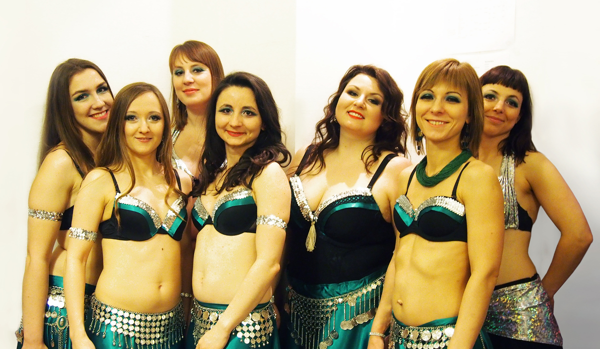
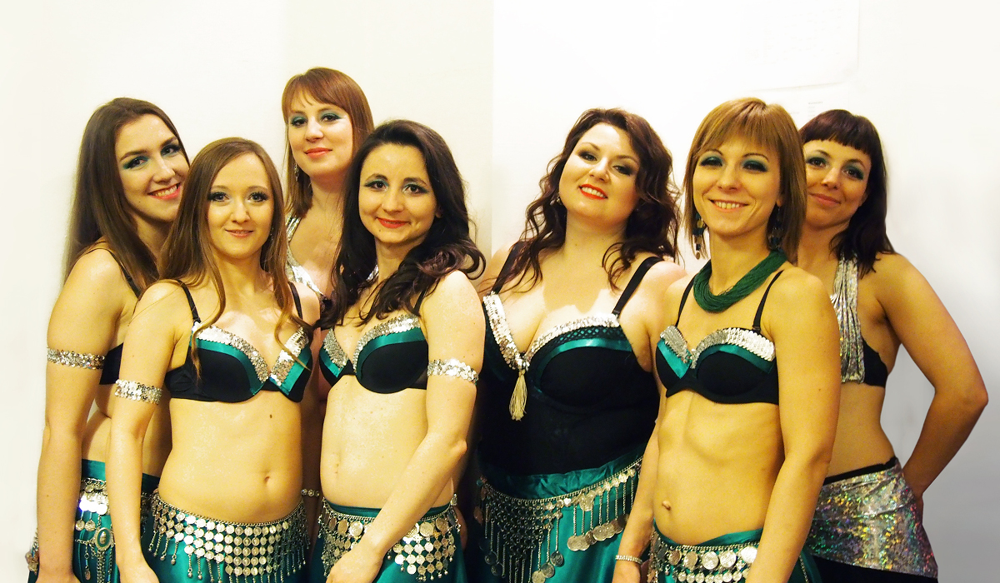

Zainteresowania
SPORTY ZIMOWE
KOLARSTWO ZJAZDOWE
ZWIERZĘTA

TANIEC BRZUCHA
Witaj na mojej stronie!
Jestem studentką Automatyki i Robotyki na Politechnice Wrocławskiej. Studia
dzienne z powodzeniem łączę z pracą w przedsiębiorstwie produkcyjnym BOSCH. Dlaczego więc IT? Automatyka
i robotyka (a wcześniej mechatronika) dały mi bardzo interdyscyplinarne wykształcenie dzięki czemu
wybierając ostateczną ścieżkę zawodową mogłam zdecydować się na programowanie. Szukając swojej
programistycznej drogi zapoznałam się z C, C++, Javą, a ostatecznie z JavaScriptem, który nakierował
mnie na HTML i CSS. Kursy online oraz praca nad stroną, na której obecnie jesteś, okazały się wyzwaniem
i jednocześnie świetną zabawą!
Studia magisterskie - AUTOMATYKA I ROBOTYKA, specjalizacja Systemy
Produkcyjne,
Wydział Mechaniczny, Politechnika Wrocławska
Studia inżynierskie - MECHATRONIKA,
Wydział Mechaniczny, Politechnika
Wrocławska
Liceum Ogólnokształcące nr 14 we Wrocławiu,
profil
matematyczno-uniwersytecki
BOSCH Sp. z o.o. - Staż w dziale Utrzymania Ruchu
Process Automation Solutions - Staż
ASPA Sp. z o.o. - Praktyka
SPORTY ZIMOWE
KOLARSTWO ZJAZDOWE
ZWIERZĘTA
TANIEC BRZUCHA
